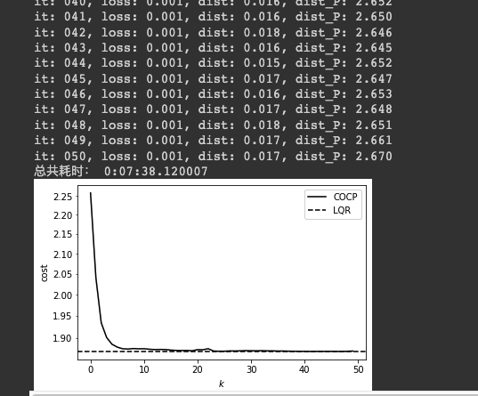
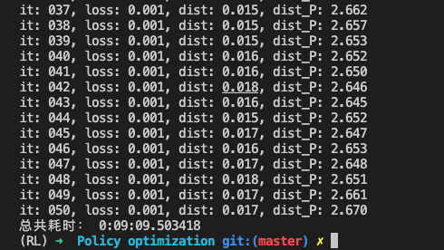
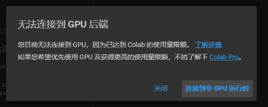

我放在实验室的服务器挂掉了，远程连不上了，想着测试下Colab行不行。主要包括，1:测试Colab的使用时间限制（GPU）2:测试Colab的CPU的性能
3:介绍Colab环境重置后的自动化操作方式
Colab可以免费白嫖GPU，但是有个很大的问题就是Colab免费版自动12小时重置docker实例，也就是说你每12小时以后，都需要重新进行初始化配置，对于一些特殊环境来说，比如我需要安装一些第三方的库，其实不是很方便。
于是就有这么一个场景，在性能的确有优势的前提下，设置一下自动化操作任务，来实现自动化安装环境，若是能这样做的话，那么当系统哪怕被重置了，也还是能够有比较好的体验。
我的环境是通过vs code的remote开发。
具体的配置环境很简单，参考https://barrypan.cn/2021/10/24/Pycharm%E5%8F%8AVScode%E8%BF%9E%E6%8E%A5Colab/
性能测试
colab：

colab
本地：

local
比本地的一台i7-3770的CPU性能要好一些
使用时间测试
1
2
3
4
| with open(directory, 'a+') as f:
while True:
f.write(datetime.datetime.now(tz).strftime('%Y-%m-%d %H:%M:%S'))
time.sleep(10)
|
通过每隔10s向Google
Drive写入一个时间戳，来判断系统能够运行的时间，因为Colab的资源是动态分配的，所以该测试方法仅供参考，不作为判断依据。
这里也发现一个问题：向Google
Drive中写入文件的时候，其延迟非常大，写入的文件在Google
Drive的web端需要很久（几十分钟）才能加载出来，原因未知。

可以看到，基本上只能使用两个小时40分的时间，这就有点太少了。
重置后的初始化操作
为了防止Colab的断开，需要在F12控制台中执行这段代码，即每隔60s的时间，点击一下连接按钮。
1
2
3
4
5
| function ConnectButton(){
console.log("Connect pushed");
document.querySelector("#top-toolbar > colab-connect-button").shadowRoot.querySelector("#connect").click()
}
setInterval(ConnectButton,60000);
|
在一个Colab中新建一个自动安装的代码块：
1
2
3
4
5
6
7
8
9
10
11
12
13
14
15
16
17
18
19
20
21
22
23
24
25
26
27
28
| !pip install colab_ssh --upgrade
from colab_ssh import launch_ssh_cloudflared, init_git_cloudflared
launch_ssh_cloudflared(password="qaz320582=")
from google.colab import drive
drive.mount('/content/gdrive/')
! apt update && apt -y upgrade
! apt -y install git htop vim
! wget https://repo.anaconda.com/archive/Anaconda3-2021.11-Linux-x86_64.sh -O condainstall.sh
! bash condainstall.sh -b -p $HOME/anaconda
! eval "$(/root/anaconda/bin/conda shell.bash hook)"
! /root/anaconda/bin/conda init
! echo y | /root/anaconda/bin/conda create -n policy_optimization python==3.8
! /root/anaconda/bin/conda activate policy_optimization
! echo y | conda install pytorch torchvision torchaudio cudatoolkit=11.3 -c pytorch
! echo y | pip install cvxpylayers
! echo y | conda install matplotlib
! echo y | conda install pandas
|
是否要升级Colab Pro
淘宝上一个月70出头，实际自己用外币信用卡支付的话65左右吧，淘宝贵个10块钱。
但是Colab
Pro官网说只能相比于免费版多一倍的使用时长，也就是只有5个小时，这就有点太少了。